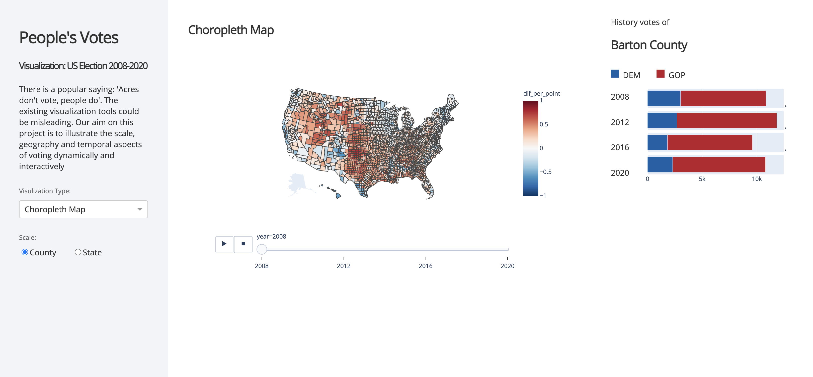
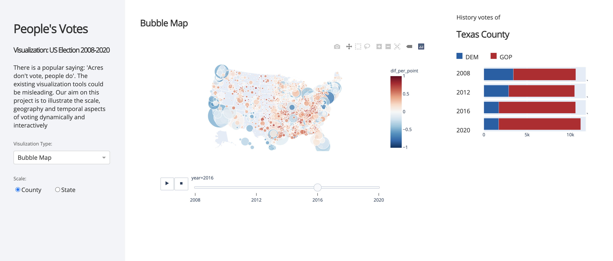
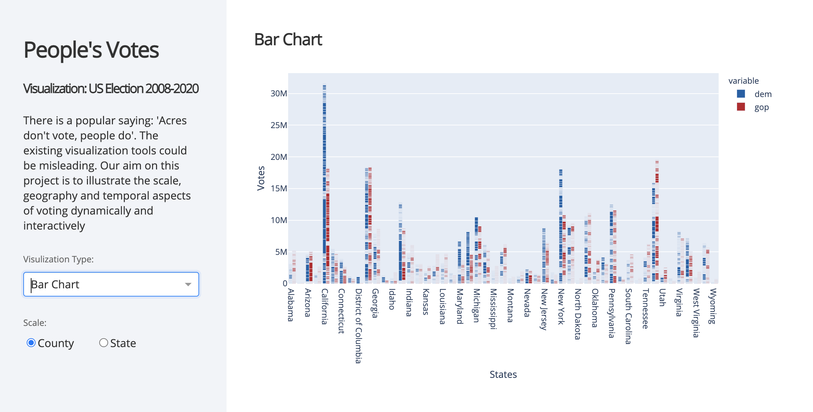

People's vote
Data Visualization for 2008-2020 US Election
The visualization and data analysis of election data can help political parties formulate election strategies and help relevant agencies predict election results. Most existing election data visualizations use choropleth maps to illustrate the distribution of votes between Republican Party and Democratic Party in the same election. However, this is far from enough for analyzing election patterns since it only makes comparison in the regional level. Our goal is to develop a more comprehensive way to visualize the effect of time on election patterns through dynamic interaction.
Data Visulazation
There are few use cases we have performed on our visualization tool, to achieve our tasks. First we select the choropleth map, then select state view. We can look at the colored choropleth map of United States, with color scaled from blue to red. By clicking the play button, the map is displaying year by year in animation. we can easily find some pattern in the visualization, we can also pause the playing and see any year we want.
We can also perform several similar use cases by switching to the bubble map or switch to the county view. Furthermore, no matter which map we are looking at, we can always click on the map, the detail of the point where we clicked well appear in the right of the screen. We can compare the election results in the history of that specific state/county.
Besides, the bar chart’s segmented coloring is a appropriate way to show the distribution of votes of the two parties, so we also adopted the visualization form of the bar chart.
